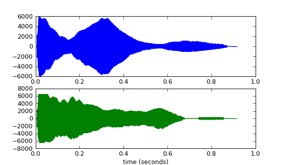

声音的输入输出
在本章我们将学习如何读写WAV文件，如何利用声卡实时地进行声音的输入输出。标准的Python已经支持WAV文件的读写，而实时的声音输入输出需要安装pyAudio(http://people.csail.mit.edu/hubert/pyaudio)。最后我们还将看看如何使用pyMedia(http://pymedia.org)进行Mp3的解码和播放。
掌握了上面的基础知识之后，就可以做许多有趣的声效处理的算法实验了。声效处理方面的内容将在以后的章节详细介绍。
读写Wave文件
WAV是Microsoft开发的一种声音文件格式，虽然它支持多种压缩格式，不过它通常被用来保存未压缩的声音数据（PCM脉冲编码调制)。WAV有三个重要的参数：声道数、取样频率和量化位数。
- 声道数：可以是单声道或者是双声道
- 采样频率：一秒内对声音信号的采集次数，常用的有8kHz, 16kHz, 32kHz, 48kHz, 11.025kHz, 22.05kHz, 44.1kHz
- 量化位数：用多少bit表达一次采样所采集的数据，通常有8bit、16bit、24bit和32bit等几种
例如CD中所储存的声音信号是双声道、44.1kHz、16bit。
如果你需要自己录制和编辑声音文件，推荐使用Audacity(http://audacity.sourceforge.net)，它是一款开源的、跨平台、多声道的录音编辑软件。在我的工作中经常使用Audacity进行声音信号的录制，然后再输出成WAV文件供Python程序处理。
读Wave文件
下面让我们来看看如何在Python中读写声音文件：
# -*- coding: utf-8 -*-
import wave
import pylab as pl
import numpy as np
# 打开WAV文档
f = wave.open(r"c:\WINDOWS\Media\ding.wav", "rb")
# 读取格式信息
# (nchannels, sampwidth, framerate, nframes, comptype, compname)
params = f.getparams()
nchannels, sampwidth, framerate, nframes = params[:4]
# 读取波形数据
str_data = f.readframes(nframes)
f.close()
#将波形数据转换为数组
wave_data = np.fromstring(str_data, dtype=np.short)
wave_data.shape = -1, 2
wave_data = wave_data.T
time = np.arange(0, nframes) * (1.0 / framerate)
# 绘制波形
pl.subplot(211)
pl.plot(time, wave_data[0])
pl.subplot(212)
pl.plot(time, wave_data[1], c="g")
pl.xlabel("time (seconds)")
pl.show()

WindowsXP的经典"叮"声的波形
首先载入Python的标准处理WAV文件的模块，然后调用wave.open打开wav文件，注意需要使用"rb"(二进制模式)打开文件：
import wave
f = wave.open(r"c:\WINDOWS\Media\ding.wav", "rb")
open返回一个的是一个Wave_read类的实例，通过调用它的方法读取WAV文件的格式和数据：
getparams：一次性返回所有的WAV文件的格式信息，它返回的是一个组元(tuple)：声道数, 量化位数（byte单位）, 采样频率, 采样点数, 压缩类型, 压缩类型的描述。wave模块只支持非压缩的数据，因此可以忽略最后两个信息：
params = f.getparams() nchannels, sampwidth, framerate, nframes = params[:4]getnchannels, getsampwidth, getframerate, getnframes等方法可以单独返回WAV文件的特定的信息。
readframes：读取声音数据，传递一个参数指定需要读取的长度（以取样点为单位），readframes返回的是二进制数据（一大堆bytes)，在Python中用字符串表示二进制数据：
str_data = f.readframes(nframes)
接下来需要根据声道数和量化单位，将读取的二进制数据转换为一个可以计算的数组：
wave_data = np.fromstring(str_data, dtype=np.short)
通过fromstring函数将字符串转换为数组，通过其参数dtype指定转换后的数据格式，由于我们的声音格式是以两个字节表示一个取样值，因此采用short数据类型转换。现在我们得到的wave_data是一个一维的short类型的数组，但是因为我们的声音文件是双声道的，因此它由左右两个声道的取样交替构成：LRLRLRLR....LR（L表示左声道的取样值，R表示右声道取样值）。修改wave_data的sharp之后：
wave_data.shape = -1, 2
将其转置得到：
wave_data = wave_data.T
整个转换过程如下图所示：
最后通过取样点数和取样频率计算出每个取样的时间：
time = np.arange(0, nframes) * (1.0 / framerate)
写Wave文件
写WAV文件的方法和读类似：
# -*- coding: utf-8 -*-
import wave
import numpy as np
import scipy.signal as signal
framerate = 44100
time = 10
# 产生10秒44.1kHz的100Hz - 1kHz的频率扫描波
t = np.arange(0, time, 1.0/framerate)
wave_data = signal.chirp(t, 100, time, 1000, method='linear') * 10000
wave_data = wave_data.astype(np.short)
# 打开WAV文档
f = wave.open(r"sweep.wav", "wb")
# 配置声道数、量化位数和取样频率
f.setnchannels(1)
f.setsampwidth(2)
f.setframerate(framerate)
# 将wav_data转换为二进制数据写入文件
f.writeframes(wave_data.tostring())
f.close()
10-12行通过调用scipy.signal库中的chrip函数，产生长度为10秒、取样频率为44.1kHz、100Hz到1kHz的频率扫描波。由于chrip函数返回的数组为float64型，需要调用数组的astype方法将其转换为short型。
18-20行分别设置输出WAV文件的声道数、量化位数和取样频率，当然也可以调用文件对象的setparams方法一次性配置所有的参数。最后21行调用文件的writeframes方法，将数组的内部的二进制数据写入文件。writeframes方法会自动的更新WAV文件头中的长度信息(nframes)，保证其和真正的数据数量一致。
用pyAudio播放和录音
通过上一节介绍的读写声音文件的方法，我们可以离线处理已经录制好的声音。不过更酷的是我们可以通过pyAudio库从声卡读取声音数据，处理之后再写回声卡，这样就可以在电脑上实时地输入、处理和输出声音数据。想象一下，我们可以做一个小程序，读取麦克风的数据；加上回声并和WAV文件中的数据进行混合；最后从声卡输出。这不就是一个Karaoke的原型么。
pyAudio是开源声音库PortAudio( http://www.portaudio.com )的Python绑定，目前它只支持阻塞式的输入输出模式。所谓阻塞式就是需要用户的程序主动地去读写输入输出流。虽然阻塞式在功能上有所局限，但是由于编程比较简单，非常适合一些处理声音的脚本程序开发。
播放
下面先来看看如何用pyAudio播放声音。
# -*- coding: utf-8 -*-
import pyaudio
import wave
chunk = 1024
wf = wave.open(r"c:\WINDOWS\Media\ding.wav", 'rb')
p = pyaudio.PyAudio()
# 打开声音输出流
stream = p.open(format = p.get_format_from_width(wf.getsampwidth()),
channels = wf.getnchannels(),
rate = wf.getframerate(),
output = True)
# 写声音输出流进行播放
while True:
data = wf.readframes(chunk)
if data == "": break
stream.write(data)
stream.close()
p.terminate()
这段程序首先根据WAV文件的量化格式、声道数和取样频率，分别配置open函数的各个参数，然后循环从WAV文件读取数据，写入用open函数打开的声音输出流。我们看到17-20行的while循环没有任何等待的代码。因为pyAudio使用阻塞模式，因此当底层的输出数据缓存没有空间保存数据时，stream.write会阻塞用户程序，直到stream.write能将数据写入输出缓存。
PyAudio类的open函数有许多参数：
- rate - 取样频率
- channels - 声道数
- format - 取样值的量化格式 (paFloat32, paInt32, paInt24, paInt16, paInt8 ...)。在上面的例子中，使用get_format_from_width方法将wf.sampwidth()的返回值2转换为paInt16
- input - 输入流标志，如果为True的话则开启输入流
- output - 输出流标志，如果为True的话则开启输出流
- input_device_index - 输入流所使用的设备的编号，如果不指定的话，则使用系统的缺省设备
- output_device_index - 输出流所使用的设备的编号，如果不指定的话，则使用系统的缺省设备
- frames_per_buffer - 底层的缓存的块的大小，底层的缓存由N个同样大小的块组成
- start - 指定是否立即开启输入输出流，缺省值为True
录音
从声卡读取数据和写入数据一样简单，下面我们用一个简单的声音监测小程序来展示一下如何用pyAudio读取声音数据。
# -*- coding: utf-8 -*-
from pyaudio import PyAudio, paInt16
import numpy as np
from datetime import datetime
import wave
# 将data中的数据保存到名为filename的WAV文件中
def save_wave_file(filename, data):
wf = wave.open(filename, 'wb')
wf.setnchannels(1)
wf.setsampwidth(2)
wf.setframerate(SAMPLING_RATE)
wf.writeframes("".join(data))
wf.close()
NUM_SAMPLES = 2000 # pyAudio内部缓存的块的大小
SAMPLING_RATE = 8000 # 取样频率
LEVEL = 1500 # 声音保存的阈值
COUNT_NUM = 20 # NUM_SAMPLES个取样之内出现COUNT_NUM个大于LEVEL的取样则记录声音
SAVE_LENGTH = 8 # 声音记录的最小长度：SAVE_LENGTH * NUM_SAMPLES 个取样
# 开启声音输入
pa = PyAudio()
stream = pa.open(format=paInt16, channels=1, rate=SAMPLING_RATE, input=True,
frames_per_buffer=NUM_SAMPLES)
save_count = 0
save_buffer = []
while True:
# 读入NUM_SAMPLES个取样
string_audio_data = stream.read(NUM_SAMPLES)
# 将读入的数据转换为数组
audio_data = np.fromstring(string_audio_data, dtype=np.short)
# 计算大于LEVEL的取样的个数
large_sample_count = np.sum( audio_data > LEVEL )
print np.max(audio_data)
# 如果个数大于COUNT_NUM，则至少保存SAVE_LENGTH个块
if large_sample_count > COUNT_NUM:
save_count = SAVE_LENGTH
else:
save_count -= 1
if save_count < 0:
save_count = 0
if save_count > 0:
# 将要保存的数据存放到save_buffer中
save_buffer.append( string_audio_data )
else:
# 将save_buffer中的数据写入WAV文件，WAV文件的文件名是保存的时刻
if len(save_buffer) > 0:
filename = datetime.now().strftime("%Y-%m-%d_%H_%M_%S") + ".wav"
save_wave_file(filename, save_buffer)
save_buffer = []
print filename, "saved"
此程序一开头是一系列的全局变量，用来配置录音的一些参数：以SAMPLING_RATE为采样频率，每次读入一块有NUM_SAMPLES个采样的数据块，当读入的采样数据中有COUNT_NUM个值大于LEVEL的取样的时候，将数据保存进WAV文件，一旦开始保存数据，所保存的数据长度最短为SAVE_LENGTH个块。WAV文件以保存时的时刻作为文件名。
从声卡读入的数据和从WAV文件读入的类似，都是二进制数据，由于我们用paInt16格式(16bit的short类型)保存采样值，因此将它自己转换为dtype为np.short的数组。